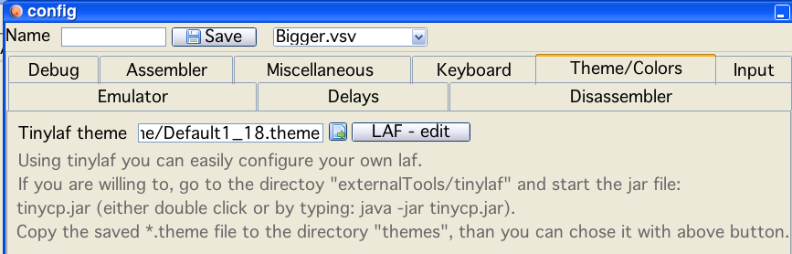

There are a couple of options available to change the appearance of Vide. The main instrument is thru java - LAFs (Look And Feel).
Vide uses the "tinylaf" package of Hans Bickel. The original thought was, to have a similar appearance of Vide on different OS.
But the package can also be used to build, change or enhance LAFs.
The following image contains nearly all features:
As a seperate lonely feature - the TAB size that is used within Vedi, is als configured here.
build a laf
In the background you see the configuration tab "Theme/Colors". On this tab you can:
chose which tinylaf "theme" you would like to use
go to the tinylaf theme editor
and configure the colors of the syntax highlight for vedi
Nearly all aspects of the gui can be altered with themes.
colors
shadows
fonts
sizes
decorations
...
One aspect that does not immediately spring to mind is the above mentioned "sizes". Using different themes it is possible to increse/decrease with just a few clicks the font size of the entire vide application.
You are invited to experiment!
Note!
Size of the editor font is selected directly via the editor!
Example:
Smaller

Larger